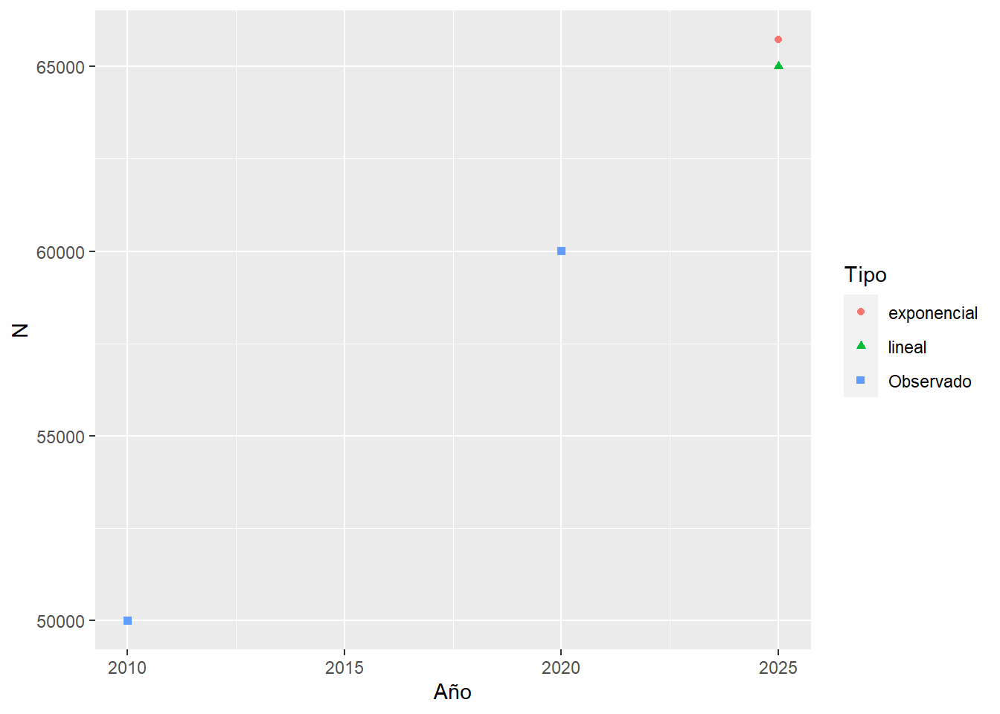
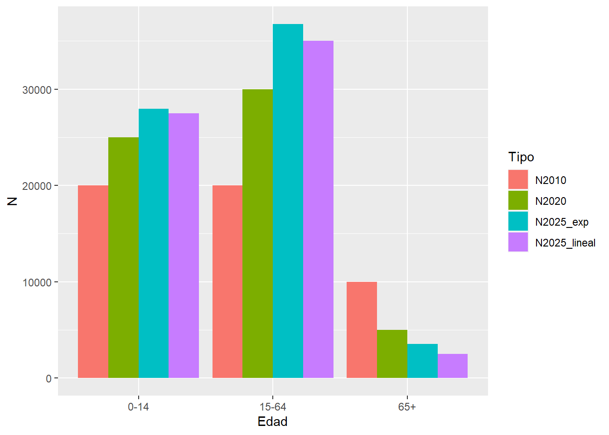

5 Funciones
5.1 DemogRafía
¿Qué es la demografía? Algunas definiciones (tomado de Carmichael, 2016):
Guillard (1855; citado en Shryock, Siegel and Associates, 1973): “la historia natural y social de la especie humana o el conocimiento matemático de las poblaciones, de sus cambios generales y de su condición física, civil, intelectual y moral”.
Hauser y Duncan (1959): La demografía es el estudio del tamaño, la distribución territorial y la composición de la población, los cambios en la misma y los componentes de dichos cambios, que pueden identificarse como natalidad, mortalidad, movimiento territorial (migración) y movilidad social (cambio de estado).
Weeks (1994): La demografía se refiere a prácticamente todo lo que influye, o puede ser influenciado por el tamaño de la población, su distribución, procesos, estructura o características de ella.
Preston et. al, (2001): cambios en su tamaño, sus tasas de crecimiento y su composición. La demografía es uno de las disciplinas de las ciencias sociales donde los análisis a nivel micro y macro encuentran quizás su más completa y satisfactoria articulación.
Palabras clave: especie + tamaño + composición + territorio + estado + cambio + micro/macro.
5.2 Funciones
Una función consiste en encapsular un proceso, que recibe argumentos y devuelve un resultado. En general, si un bloque de código es copiado y pegado en más de una vez en un espacio de trabajo entonces merece su función. Las funciones en R contienen:
un nombre
argumentos (input) ¿Qué necesita?
cuerpo (código que elabora una respuesta en función de argumentos)
respuesta/resultado (output). ¿Qué devuelve?
Por ejemplo, si queremos tener una función que nos diga cuantos años cumplidos tendrá una persona de edad x en t años:
edad_en_t_anios <- function(x, t){
x_en_t_años <- x + t
# este valor solo existirá en este contexto (scoping)
return(x_en_t_años)
}
# Juan tiene 35. ¿Cuantos tendrá en 10 años?
edad_en_t_anios(35, 10) # no nombré los argumentos porque respeté el orden
# Edades de un hogar en 5 años
edades <- c(59, 58, 32, 30, 25, 25)
edad_en_t_anios(edades, 5)Las funciones pueden tener valores por defecto. Por ejemplo:
5.3 Crecimiento
Tenemos una población que en el año 2010 era de 50.000 personas y en 2020 era de 60.000. Nos preguntan cual sería la población a 2025. Existen distintas formas en que podemos modelar su crecimiento total a partir de dos puntos observados en el tiempo. En términos generales para un momento 0 y un momento t, debemos obtener primero el ritmo al que crece, es decir su tasa anual promedio \(\overline{r}(0,t)\):
| Supuesto | \(N(t)\) | \(\overline{r}(0,t)\) |
|---|---|---|
| Lineal | \(N(0) * (1+r*t)\) | \([\frac{N(t)}{N(0)}-1]/t\) |
| Exponencial | \(N(0) * e^{r * t}\) | \(\ln(\frac{N(t)}{N(0)})/t\) |
Construyamos una función para modelar su crecimiento y poder interpolar/extrapolar según el modelo lineal. Una función debe ser diseñada para ser aplicable a muchos casos específicos.
Llamaremos h a la distancia desde la primera observación para la que deseamos obtener la nueva población.
Nuestra respuesta a la pregunta inicial podría ser, siendo h = 15:
# ¿qué población habrá en 2025?
N2025 <- crecim_lineal(N0 = 50000, Nt = 60000, t = 10, h = 15)
# miremos un gráfico
data.frame(Año = c(2010, 2020, 2025),
N = c(50000, 60000, N2025)) %>%
ggplot(aes(Año, N)) +
geom_line() +
geom_point() ¿Si quisiera tener opciones al momento de calcular el crecimiento? Por ejemplo, que sea de tipo lineal o exponencial. Incluyamos el argumento tipo y utilicemos el condicional if para posicionarnos en el modelo que se quiera.
crecim <- function(N0, Nt, t, h, tipo = "lineal"){
# si se quiere el modelo exponencial
if(tipo == "exponencial"){
r <- log(Nt/N0)/t
Nh <- N0 * exp(r*h)
}
# si se quiere el modelo lineal
if(tipo == "lineal"){
Nh <- crecim_lineal(N0, Nt, t, h) # una función dentro de otra!!!
}
return(Nh)
}Veamos que obtuvimos con las dos opciones:
N2025 <- data.frame(N2025_lineal = crecim(50000, 60000, 10, 15, tipo = "lineal"),
N2025_exp = crecim(50000, 60000, 10, 15, tipo = "exponencial"))
data.frame(Año = c(2010, 2020, 2025, 2025),
N = c(50000, 60000, N2025$N2025_lineal, N2025$N2025_exp),
Tipo = c("Observado", "Observado", "lineal", "exponencial")) %>%
ggplot(aes(Año, N)) +
geom_point(aes(shape = Tipo, color=Tipo)) 
El condicional puede pensarse como if y else también, ¿cómo sería?
¿Y si tuviéramos un vector de población por edad? Podemos tener una tasa \(\overline{r}(0,t)\) por cada edad.
# crecimiento por edad
N2025_edad <- data.frame(Edad = c("0-14", "15-64", "65+"),
N2010 = c(20000, 20000, 10000),
N2020 = c(25000, 30000, 5000)) %>%
mutate(N2025_lineal = crecim(N2010, N2020, 10, 15, tipo = "lineal"),
N2025_exp = crecim(N2010, N2020, 10, 15, tipo = "exponencial"))
# hagamos tidy el data.frame primero
N2025_edad %>%
pivot_longer(cols = !Edad, names_to = "Tipo", values_to = "N") %>%
ggplot(aes(Edad, N, fill = Tipo)) +
geom_bar(stat = "identity", # no trates de ser un histograma
position = "dodge") # posición lado a lado
El poner a disposición de otros usuarios tus funciones requiere controlar los errores posibles, entre otras cosas por ingresar como argumentos objetos no esperados (por ejemplo, un objeto character en algunos de los primeros argumentos). Ejemplo: hagamos no aceptable el ingreso de un objeto character como argumento en N0, Nt, t ni h:
crecim_lineal_check <- function(N0, Nt, t, h){
# check argumentos
if(is.character(N0) | is.character(Nt) | is.character(t) | is.character(h)){
stop("Ingresaste un texto en algún argumento")
}
# función previa
r <- (Nt/N0-1)/t
Nh <- N0 * (1+r*h)
return(Nh)
}
# probemos
crecim_lineal_check(50000, 60000, 10, "hola")5.3.1 Actividad
- Crear una función que sume un vector de población y devuelva el resultado en miles.
Siguiendo el ejemplo trabajado: ¿cuál sería la población al 2017 bajo el supuesto de crecimiento exponencial? ¿Es equivalente interpolar cada edad y luego sumar? ¿Y para el tipo lineal?
Crear una función que informe la edad modal, por ejemplo para
data.frame(Edad = c(0,4,7,10), Casos = c(2, 6, 9, 0))debería devolver la edad 7.Obtener una función que permita conocer en cuantos años (h) se duplicará la población respecto al primer valor observado, bajo el supuesto de crecimiento lineal y exponencial. (Ayuda: obtén \(r\) y luego despeja \(h\) para que \(N_h=N_0*2\)).
5.4 Estandarizando
Entre los intentos por discriminar el efecto de la estructura por edad en el indicador de Tasa Bruta de Mortalidad \(TBM(t)=\frac{D(t)}{N(t)}\) (defunciones sobre población expuesta2) se encuentra el clásico método de estandarización directa (Swanson & Siegel, 2004).
En principio, la \(TBM(t)\) de una población puede ser expresada como el promedio ponderado de las tasas específicas de mortalidad \(M_x(t)=\frac{D_x(t)}{N_x(t)}\) por el peso poblacional de cada edad \(C_x(t)=\frac{N_x(t)}{N(t)}\):
\[ TBM(t) = \frac{D(t)}{N(t)}= \sum_{x>=0}{M_x(t)\,C_x(t)} \]
Poblaciones envejecidas tendrán una mayor frecuencia de muertes debido a la distribución de \(C_x(t)\), pero no reflejando su nivel. El proceso de estandarización reemplaza \(C_x(t)\) por otra distribución que permita la comparación entre distintas poblaciones: sería equivalente a asignarle una misma pirámide poblacional a ambas poblaciones. Si llamamos a esta distribución estándar tenemos \(C^S_x(t)\) y podemos calcular para dos poblaciones cualquiera \(A\) y \(B\) su Tasa Estandarizada de Mortalidad:
\[ TSM^A(t) = \sum_{x>=0}{M^A_x(t)\,C^S_x(t)}\\ TSM^B(t) = \sum_{x>=0}{M^B_x(t)\,C^S_x(t)}\\ \]
Lo que permite comparar \(TSM^A(t)\) con \(TSM^B(t)\): \(TSM^A(t) \lessgtr TSM^A(t)\). Pero vayamos al ejemplo!!!
Obtengamos la población y defunciones de Chile, Japón y Polonia del año 2000 y 2010 leyendo la tabla “Chile_Japon_Polonia.csv” en la carpeta “Data”. ¿Cómo obtuve esta información? Directamente desde R hacia el repositorio de la Human Mortality Database, utilizando el paquete HMDHFDplus. Por ejemplo en este caso las defunciones de Chile por grupos quinquenales de edad (en realidad se muestra la edad inicial de cada intervalo) cada 5 años calendario, “Deaths_5x5”, se pueden obtener con la función readHMDweb.
Enfoquémonos en el 2010 para comparar los tres países. Japón presenta una \(TBM\) mayor pero atribuible a otro estadío en su envejecimiento según la porción de población de 65 años y más.
db <- db %>% filter(Year == 2010)
db %>%
group_by(Country) %>%
summarise(TBM = sum(D)/sum(N)*1000,
porc_65_mas = sum(N[Age>=65])/sum(N)) Y esto es visible en la jerarquía de las tasas de mortalidad por edad:
# creamos la varibale con las tasas de mortalidad específicas
db <- db %>% mutate(M = D/N)
ggplot(db) +
geom_step(aes(x=Age,y=M,color=Country))+
scale_y_log10()+
scale_x_continuous(breaks = seq(0,110,10), labels = seq(0,110,10)) +
labs(caption = "Human Mortality Database")+
theme_bw()Estandaricemos utilizando el promedio de la estructura por edad de los tres:
C_x_promedio <- db %>%
group_by(Age) %>%
summarise(c_x = sum(N)/sum(db$N))
db %>%
left_join(C_x_promedio) %>%
group_by(Country) %>%
summarise(TSM = sum(M * c_x)*1000)!Ahora sí! El indicador nos muestra un nivel de mortalidad para 2010 mayor en Polonia, seguido de Chile y Japón. Cabe aclarar que en este sentido el mejor indicador resumen es la esperanzada de vida (\(e_x\)), que se estima a partir de la construcción de una tabla de vida (Preston y otros, 2001).
¿Cómo sería una función que reciba una tabla con las variables País, N y D y devuelva las \(TBM\) y las \(TSM\)?
5.4.1 Actividad
Responder la pregunta previa con los mismos datos utilizados arriba.
Con los datos de la tabla “Chile_Japon_Polonia.csv”: ¿qué se puede decir sobre la evolución de la mortalidad de Polonia en los años 1990, 2000 y 2010? ¿Bajó o creció?
Graficar la distribución de las defunciones por edad (colocando cada punto en la edad media del intervalo, por ejemplo para el grupo 5-10, en 7.5).
5.5 Funciones demográficas en paquetes demográficos
Estamos entrando en zona de utilización de funciones demográficas de paquetes.
Proyecto DemoTools. Su instalación demora un poco:
library(devtools)
install.packages("rstan", repos = c("https://mc-stan.org/r-packages/", getOption("repos")))
install_github("timriffe/DemoTools")5.5.1 Tablas de mortalidad
Construir una función que produzca una tabla de mortalidad a partir de un set de tasas por edad de mortalidad es un lindo ejercicio de programación en R. Pero por suerte DemoTools tiene una muy buena implementación. Acá para Japón 2010:
jpn_2010 <- db %>% filter(Country == "Japon", Year == 2010)
# obtengo la tabla
library(DemoTools)
tm_jpn_2010 <- lt_abridged(nMx = jpn_2010$M, Age = jpn_2010$Age)
# veamos la función de sobrevivencia:
tm_jpn_2010 %>%
ggplot(aes(Age, lx)) +
geom_point() +
geom_line()+
theme_bw()Repasemos sus argumentos, como OAGNew, extrapLaw y a0rule. También puede graduar, es decir pasar a edades simples.
5.5.2 Evaluación de declaración de edad
Con el índice de Myers veamos si en Chaco mejoró la declaración por edad de varones entre los censos 2001 y 2010. Un valor del indicador que tienda a 0 indica una mejor declaración (bajo los supuesto del método).
5.5.3 Graduación de población por edad simple
El método de Sprague desagrega por edad simple conteos agrupados por edad quinquenal. Veamos como funciona para los varones de Chaco en el año 2010. Primero agregando, y luego aplicando el método.
# me quedo con 2010
pob_chaco_2010 <- pob_chaco %>% filter(CENSO == 2010)
# agrupo la población por grupos quinquenales
pob_chaco_2010_quinquenal <- pob_chaco %>%
filter(CENSO == 2010) %>%
mutate(EDAD_q = trunc(EDAD/5) * 5) %>%
group_by(EDAD_q) %>%
summarise(VARON = sum(VARON))
# aplico sprague
pob_chaco_2010_sprague <- graduate(pob_chaco_2010_quinquenal$VARON, pob_chaco_2010_quinquenal$EDAD_q, method = "sprague")
# junto
pob_chaco_2010_simple <- pob_chaco_2010 %>%
full_join(tibble(EDAD = 0:110, VARON_sprague = pob_chaco_2010_sprague)) %>%
select(EDAD, VARON, VARON_sprague) %>%
pivot_longer(!EDAD, names_to="Tipo", values_to="Población")
# visualizo
pob_chaco_2010_simple %>%
ggplot(aes(EDAD, Población, color=Tipo)) +
geom_line() +
geom_point()
Para ser más rigurosos en la notación \(N(t)\) debería ser expresado como \(\overline{N}(t,t+1)\), pero simplificaremos un poco para enfocarnos en lo que haremos en R. Para más detalles ver Preston y otros (2001)↩︎